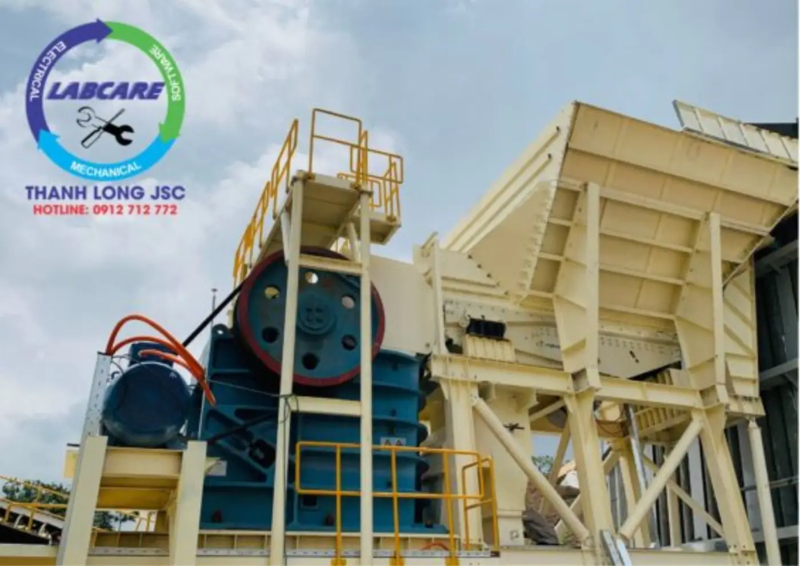
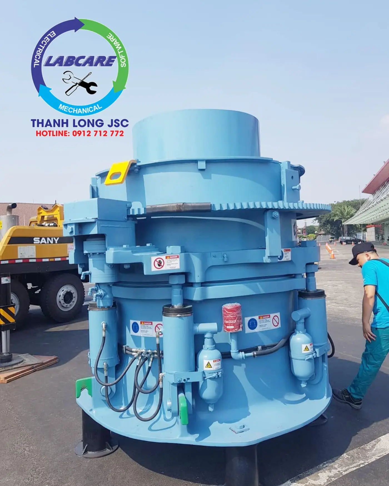
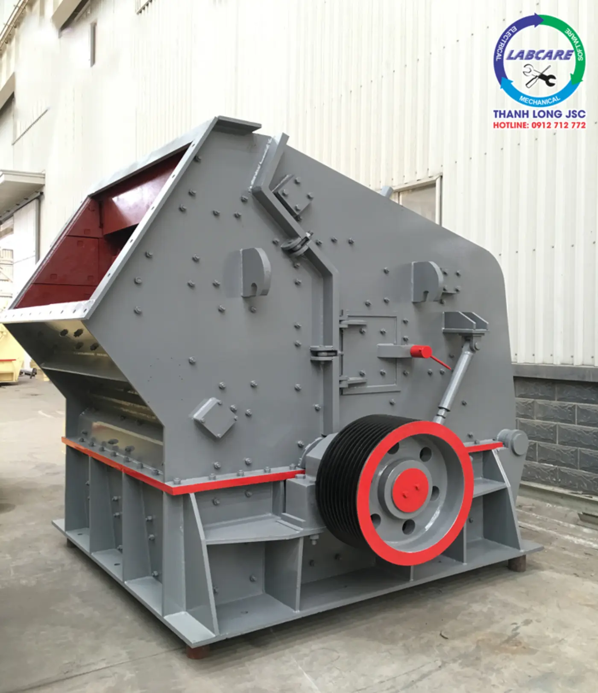
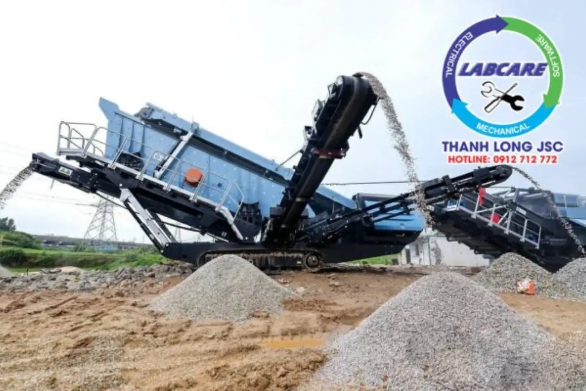
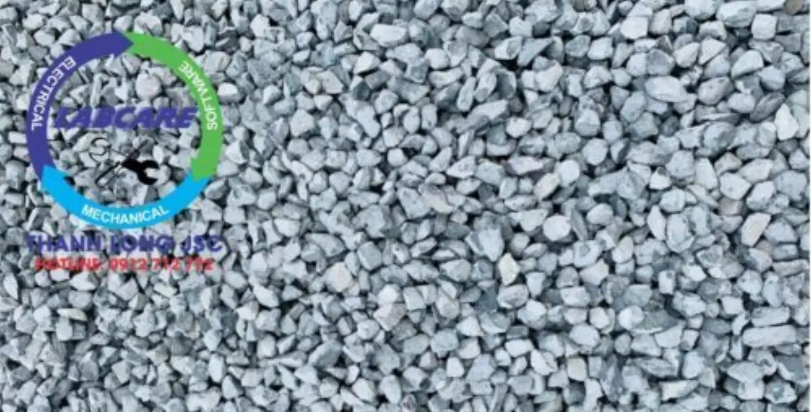

Các loại máy nghiền đá
Một trạm nghiền thường ghép 2–4 loại máy: máy nghiền sơ cấp bẻ đá hộc, máy thứ cấp tạo hình hạt, và máy VSI nếu cần cát.

Hai hàm ép bẻ đá hộc sau nổ mìn. Máy đầu tiên và chịu tải nặng nhất của dây chuyền.
- Vị trí
- Nghiền sơ cấp
- Đá phù hợp
- Mọi loại đá
- Độ mở hàm
- 600×900 – 900×1200 mm

Ép đá giữa côn quay lệch tâm và vỏ côn. Có loại lò xo, thủy lực, bán thủy lực; dùng ở cấp hai, cấp ba hoặc cấp bốn.
- Vị trí
- Nghiền trung, mịn
- Đá phù hợp
- Granite, bazan
- Model
- SC350, SC650

Rôto gắn búa quay nhanh, ném đá vào tấm phản kích. Hạt ra dạng khối, đẹp cho bê tông.
- Vị trí
- Sơ cấp hoặc thứ cấp
- Đá phù hợp
- Đá vôi, tái chế
- Điểm mạnh
- Hình dạng hạt
Búa gắn trên rôto đập vỡ vật liệu giòn, mềm. Gọn, chi phí đầu tư thấp, hợp trạm nhỏ.
- Vị trí
- Nghiền một cấp
- Đá phù hợp
- Đá vôi, than
- Quy mô
- Trạm nhỏ

Đá va vào đá ở tốc độ cao để ra cát và đá vo. Công đoạn cuối khi trạm cần sản xuất cát nhân tạo.
- Vị trí
- Cấp ba, làm cát
- Tỷ lệ cát
- 35–50%
- Động cơ
- 110–150 kW

Máy nghiền, sàng và băng tải trên khung bánh xích hoặc bánh lốp. Không cần làm móng, chuyển mỏ nhanh.
- Phù hợp
- Công trường, KCN
- Vật liệu
- Đá, phế thải xây dựng
- Điểm mạnh
- Lắp đặt nhanh
So sánh nhanh
Bảng tóm tắt để chọn máy cho từng công đoạn. Chi tiết từng máy nằm ở trang riêng.
| Máy | Cách nghiền | Công đoạn | Hợp nhất với |
|---|---|---|---|
| Nghiền hàm | Ép giữa hai hàm | Sơ cấp | Mọi loại đá hộc |
| Nghiền côn | Ép giữa côn và vỏ | Trung, mịn | Đá cứng, mài mòn cao |
| Phản kích | Va đập bằng búa | Sơ cấp, thứ cấp | Đá vôi, tái chế |
| Nghiền búa | Va đập bằng búa | Một cấp | Vật liệu giòn, mềm |
| VSI | Đá va đá tốc độ cao | Làm cát | Cát nghiền, đá vo |
Chọn máy theo loại đá
Độ cứng và độ mài mòn của đá quyết định máy thứ cấp nào rẻ hơn khi chạy lâu dài.
Rất cứng, mài mòn cao
Granite
Hợp công trình cầu đường cần độ bền cao.
Hàm→Côn→VSI
Cứng, giòn
Bazan
Cứng như granite nhưng giòn hơn, hợp đá dăm và cát nghiền cho cao tốc.
Hàm→Côn→VSI
Mềm hơn, dễ vỡ
Đá vôi
Dùng nhiều trong dân dụng, đổ móng. Cần thiết bị nhẹ, tiết kiệm điện.
Hàm→Côn / phản kích
Cấu hình dây chuyền theo công suất
Ba cấu hình phổ biến cho mỏ đá xây dựng. Mỗi cấu hình có thể làm dạng module hoặc chìa khóa trao tay, tùy mặt bằng, nguồn đá và vốn đầu tư.
| Công suất | Máy nghiền hàm | Máy nghiền côn | Làm cát |
|---|---|---|---|
| 100–150 t/h | Độ mở 600×900 mm | Côn theo công suất | VSI |
| 200–300 t/h | Độ mở 750×1060 mm | SC350 | VSI |
| Trên 350 t/h | Độ mở 900×1200 mm | SC650 | VSI |
Nguồn: bài "Cách chọn máy nghiền đá xây dựng phù hợp" của kỹ sư Thanh Long. Cấu hình cuối cùng được chốt sau khảo sát mỏ.
Trạm dưới 100 tấn/giờ thường dùng cấu hình gọn hơn hoặc máy nghiền mini. Trạm trên 800 tấn/giờ cần mô phỏng riêng. Gửi thông số qua form báo giá để nhận cấu hình.
Sàng rung và sản phẩm đầu ra
Sàng rung nhiều tầng tách đá sau nghiền thành các cỡ bán được. Phần quá cỡ quay lại máy nghiền, nên sàng quyết định hiệu suất thực của cả trạm.
| Cỡ (mm) | Tên thường gọi | Dùng cho |
|---|---|---|
| 0–5 | Cát nghiền, đá mi bụi | Bê tông, vữa, gạch không nung |
| 5–10 | Đá mi sàng | Bê tông nhựa, gạch block |
| 10–20 | Đá 1×2 | Bê tông kết cấu |
| 20–40 | Đá 2×4 | Bê tông khối lớn, nền |
| 40–60 | Đá 4×6 | Móng, nền đường |
| Dmax 37,5 | Đá cấp phối | Móng đường cao tốc |

Giá máy nghiền đá phụ thuộc gì
Hai trạm cùng ghi "200 tấn/giờ" có thể chênh nhau nhiều lần về giá. Bốn yếu tố quyết định:
- Loại đá: đá càng cứng, càng mài mòn thì máy và vật tư càng đắt.
- Công suất và sản lượng theo kế hoạch khai thác thực tế, không phải công suất ghi trên catalog.
- Cỡ đá vào và cỡ sản phẩm ra: càng nhiều cỡ, càng cần nhiều tầng sàng và băng tải.
- Chi phí vận hành: điện năng, vật tư tiêu hao và bảo trì trong suốt vòng đời máy.
Với máy làm cát, chênh lệch vận hành có thể lớn hơn chênh lệch giá mua. Xem bảng so sánh chi phí VSI.
Hỏi đáp
Cấu hình thường dùng cho 200–300 tấn/giờ là máy nghiền hàm độ mở 750×1060 mm, máy nghiền côn SC350 và máy làm cát VSI, kèm sàng rung và băng tải. Cấu hình cuối cùng phụ thuộc loại đá và sản phẩm đầu ra.
Đá cứng, mài mòn cao như granite, bazan hợp máy côn vì chi phí vật tư thấp hơn. Đá vôi và vật liệu tái chế hợp máy phản kích vì cho hạt dạng khối.
Giá phụ thuộc loại đá, công suất, cỡ đá vào và ra, phương án móng và mức tự động hóa. Thanh Long báo giá theo cấu hình sau khi nhận đủ thông số mỏ qua form báo giá.